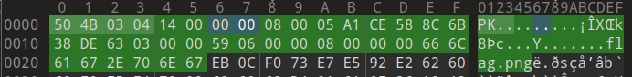

网安实践4-Misc
T1.压缩包加密解密
第一步伪加密

解密得到一个缺三个定位角的反色二维码
反色处理再补一下定位角
vmc{This_is_true_ZIP!_p-_-q_}
T2.文件识别、合并与分离
binwalk识别到文件末尾有一个png图片
1 | |
但是binwalk分离不下来，用foremost
这应该是压缩包口令HustCsEnCc
FakeFlag.txt: this_is_fake_zip
TrueFlag.png
TrueFlag=vmc{md5_32(FakeFlag)}
vmc{4059614b85477b90720a772f4fdbf1f6}
T3.图片隐写
给的jpg与正常jpg对比
每4个字节的顺序h0 h1 h2 h3被修改为了h3 h2 h1 h0
1 | |
一张蓝屏图片
眼神好直接看到flag了
vmc{You_Are_Huo_Yan_Jin_Jing}
T4.流量包分析
追踪http发现ncc.png
保存下来，png图片打不开
010editor提示crc错误
Executing template '/home/xketx/.config/SweetScape/010 Templates/Repository/PNG.bt' on '/home/noxke/Desktop/网安实践4/Misc/T4/ncc.png'... *ERROR: CRC Mismatch @ chunk[0]; in data: f8ffa6dc; expected: 7549d9b3
手动纠正crc
猜测改了图片大小，导致crc校验识别
[CTF] 根据crc码矫正png图片宽高 - sec_j - 博客园
真实图片大小width:000003ff height:000002ee
vmc{It_is_so_beautiful_my_home_NCC}
T5.音频隐写
第一遍没听出来，找原曲对比一下，听第二遍发现在1:40开始有杂音
波形图看不出来什么
频谱图
vmc{Mayday_5525_back_to_the_day}